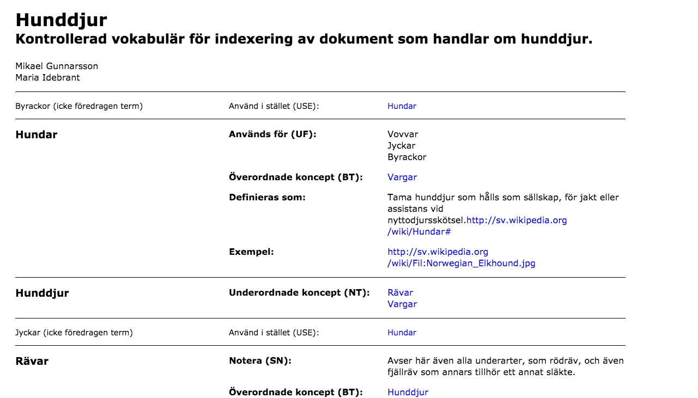
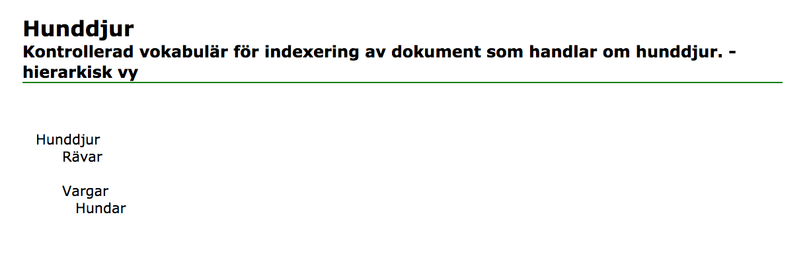

8 Se på filen i webbläsaren
När du lagt till namn samt semantiska relationer mellan övriga koncept kan du öppna filen i webbläsaren (Firefox) - men glöm inte att spara filen först. Vi ska hänvisa till två stilmallar för att titta på filen på olika sätt, skos-styleList.xsl och skos-styleHie.xsl. Stilmallarna finns upplagda på Github.
8.1 Visualisera i alfabetisk listform
Hänvisa till XSL-stilmallen skos-styleList.xsl genom att lägga till följande efter XML-deklarationen men innan rotelementet:
<?xml-stylesheet type="text/xsl" href="https://raw.githubusercontent.com/Mikael61/Mikael61.github.io/master/skos-styleList.xsl"?>Öppna sedan din XML-fil i webbläsaren Firefox. Om detta gjorts så bör du kunna se en lista där alla namn (både föredragna och alternativa) listas i alfabetisk ordning - motsvarande bilden nedan.

Den XSL som ges till dessa övningar ger bara ett exempel på hur en SKOS kan transformeras. Flera SKOS-element, som dock inte behöver användas, har till exempel ingen transformation alls och kommer inte att ges någon presentation alls i webbläsaren.
8.2 Visualisera i hierarkisk trädform
Det finns i Github-repositoriet ytterligare en XSL som med utgångspunkt från innehållet i varje koncepts prefLabel och konceptens hierarkiska relationer åskådliggör din vokabulär i trädform. Byt därför ut
<?xml-stylesheet type="text/xsl" href="https://raw.githubusercontent.com/Mikael61/Mikael61.github.io/master/skos-styleList.xsl"?>mot
<?xml-stylesheet type="text/xsl" href="https://raw.githubusercontent.com/Mikael61/Mikael61.github.io/master/skos-styleHie.xsl"?>i din XML fil. Spara och ladda om filen i Firefox. På det här viset visualiseras tesaurusen i trädform likt nedan:

8.3 Använd båda stilmallarna
Du använder med fördel stilmallarna för att kontrollera så att du får
det resultat du förväntar dig. Det måste dock sägas att för
skos-styleHie.xsl gäller att den förutsätter att din SKOS inte är
polyhierarkisk, dvs att något koncept inte har fler än ett
broader-element.
I övrigt är skos-styleHie.xsl ett bra verktyg för
att upptäcka felaktigheter i hierarkin. skos-styleList.xsl kan i sin
tur vara till hjälp för att upptäcka vissa felaktigheter med avseende på
SKOS-reglerna, var uppmärksam på eventuella röda felmeddelanden.